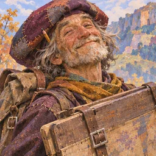
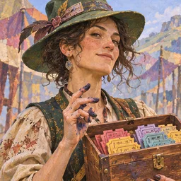

Книга ведущего · Приключенческое фэнтези о самостоятельности, рискованных тропах и дружбе без обязательного подвига · 12+ · 3–8 игроков + ведущий
Дракон уходит на покой
Медный дракон Рухомир объявил, что больше не будет единственным ответом на любую неприятность. Он хочет ходить пешком, читать приключенческие романы и иногда проигрывать в шашки. Но в Кряжах до сих пор продают прогулки с обещанием: «Если что, дракон подхватит». Вашим героям предстоят настоящие спасения, неудобные переговоры и выход на Рваный Венец, где чужая привычка к громкой помощи становится опасной. Сохранится ли дружба, когда спаситель перестанет быть услугой?
Иллюстрация к первой встрече
Если партия изменила план
Перед чтением вступления сверьте место героев, присутствующих людей и предметы с итогом прошлого вечера. Если условия встречи отпали, сыграйте последствия там, где находится партия. Событие по расписанию может произойти за кадром. Герои узнают о нём от тех, кто был на месте.
Вечер 7. Если Рухомиру снова предлагают взять всю работу
Пусть дракон назовёт, за что готов взяться сегодня. Дайте ожидающим выбрать между разовой помощью и более долгим путём с укрытием. На ужине спросите, кого они позовут в следующий раз, когда Рухомир будет занят своей книгой.
Группа отказалась от задания
Собирать публику для прощального подвига отказываемся. Снимем с тропы афишки с чужим обещанием. Просим снять с прогулки обещание драконьей страховки. Зрители узнают, что выступления им никто не обещал. Рухомир вправе уйти один.
Игроки раскрыли тайну раньше
Прочтём записку у канатов и принесём дракону афишку. Спросим, какие слова на ней его. Доступные свидетельства — Афишка с чужим обещанием, Записка у оставленных канатов. Страховку обещал Денвар; согласия Рухомира под обещанием нет. Просим Денвара самому прочитать обещание перед туристами. Он сам объясняет свой уход. Планируем обычный вечер только для приглашённых, а туристам возвращаем выбор дороги.
Партия уступила поле
Воришки утащили канат; короткое восхождение без него отпадает. Выводим тех, кто предпочёл вернуться без каната. Возвращаем билеты желающим и идём длинной тропой. Дракон никого не обязан подхватывать.
Карман ведущего
Для игры без подготовки: что говорят люди, места в стороне от главной дороги и прохожие. Пометки о правде слухов — только для ведущего; сказанное за столом становится фактом мира, лишь когда вы его подтвердите.
Слухи
«Рухомир, говорят, захворал, оттого и на покой собрался. Крылья уж не держат, вот он и ходит пешком».
Неправда. Неправда: дракон здоров и силён, ушёл добровольно, потому что устал быть единственным ответом на любую беду. Слух удобно развеять в первом же разговоре с ним — он обидится и тут же предложит поднять что-нибудь тяжёлое.
«Дракон теперь шаги считает! До второй сотни дойдёт, собьётся — и опять с единицы».
Правда. Так и есть: Рухомир учится мерить дороги шагами и сбивается, стоит его о чём-нибудь спросить. Это смешная правда второго вечера у Белой осыпи; слух ничего не решает за героев.
«С Денваром на прогулку можно хоть без верёвки идти: Рухомир всегда рядом, так в афишке и напечатано».
Отчасти правда. Афишка правда это обещает — это улика «Афишка с чужим обещанием». Но Рухомир такого согласия не давал, обещание написал Денвар сам. Слух показывает, почему люди облегчают снаряжение.
«У Верескового пня Рухомир когда-то прогнал великана, который целый обоз проглотил вместе с лошадьми».
Неправда. Песня сильно приукрашена: Бурдаш тогда перегородил дорогу, но никого не ел, а путников было трое. Свою версию великан расскажет в третьем вечере; рассказ — раздатка «Слова Бурдаша о старой встрече».
«Бурдаш у своего пня сидит с тех пор, как наши деды под стол пешком ходили. Сидит, ворчит, а денег ни с кого не берёт».
Правда. Правда: великан ничего не требует, плату за «охрану» от него берут жёлтые плащи без его ведома. Слух подводит к улике «Дощечка „От великана охраняем“», но выбор дороги остаётся за героями.
«Кто досмотрит с Нижнего зубца закат до последнего луча, тот весь год не заблудится».
Неправда. Старое поверье, ради которого на скамью и садятся любители видов. Дорогу оно, конечно, не показывает; зато объясняет, зачем трое оказались над обрывом в первом вечере.
«Канаты на скамье у Зубца меняли раз в два лета, а нынче не поменяли. Все думали: если что, дракон подхватит».
Правда. Это слова пастушки из толпы в первом вечере, и они правдивы: привычка к драконьей помощи сделала людей беспечными. Растрёпанный край каната виден прямо с площадки.
«Носильщики Денвара свои тяжёлые канаты у Белой осыпи бросили. Зачем, говорят, спину ломать, раз дракон подхватит».
Правда. Орель видел это сам, а связки лежат у широкого поворота с запиской Денвара — улика «Записка у оставленных канатов» во втором вечере. Слух лишь подсказывает, что канаты где-то есть.
«На Голой Игле ветер дверью хлопает. Кто станет на краю спиной к долине, того и сдует».
Отчасти правда. Ветер на Игле правда поворачивает внезапно, и старики советуют не стоять спиной к долине. Сам по себе он никого не сдувает; опасным его делает взмах драконьих крыльев у балкона — улика «Ленты на краю Иглы».
«Рваный Венец изнутри пустой, как бочка. Там дракон в старину клад держал, потому туда никого и не пускал».
Неправда. Никакого клада: внутри тесный карман под нависающей плитой, куда дракон просто не помещается. Голоса там и правда звучат, как из бочки. Слух безвреден: в Венец героев ведёт дело, а не сокровище.
«Вета сдачу считает быстрее, чем Денвар успевает закончить вступление».
Правда. Добрая насмешка над обоими. Вета точна и честна: в пятом вечере она открыто показывает, сколько денег осталось в коробке. Слух подсказывает, к кому идти за точным счётом.
«Денвар все деньги за прогулки на афиши спустил. Ни медяка не осталось, хоть плачь».
Отчасти правда. Часть платы правда ушла на краску и бумагу, но часть лежит в коробке Веты, и её можно вернуть людям. Это выясняется в пятом вечере без всякой утайки.
Места в стороне
Рыковый камень
Огромный серый валун у дороги из Полуденного двора, расколотый пополам ровной трещиной. По преданию, его расколол драконий рык, когда Рухомир был ещё молод и не умел рычать вполголоса. От этого камня в Кряжах отсчитывают дороги, а дети забираются в трещину и рычат по очереди, проверяя, у кого получается громче. Сам Рухомир, проходя мимо, всегда смущённо отводит глаза.
Скамейка спасённых
Длинная дубовая скамья под навесом у нижней тропы, куда обычно приводили тех, кого дракон снял со скалы или вытащил из реки. На спинке вырезаны десятки имён, и рядом с каждым — маленький медный гвоздик. Здесь до сих пор принято посидеть, выпить воды и прийти в себя, прежде чем рассказывать, что случилось. Свободного места на спинке почти не осталось.
Шашечный стол под липой
Каменный стол у края Полуденного двора, на котором вырезана шашечная доска, стёртая локтями до гладкости. По вечерам здесь играют старики, а проигравший приносит назавтра кувшин кваса. Одно поле доски когда-то треснуло, и её давно никто не чинит: играть на неё считается к удаче. Рухомир давно присматривается к этому столу, но стесняется спросить, можно ли ему тоже.
Пасека у Верескового спуска
Ряд пёстрых ульев на склоне ниже великанского пня, обнесённый низкой изгородью из камней. Пасечник ставит их здесь каждое лето, потому что вереск в Кряжах цветёт дольше, чем где-либо. Путники останавливаются купить сотового мёда, а пасечник рассказывает, что пчёлы не боятся ни великана, ни дракона, только громких рассказчиков: от них, говорит, мёд горчит.
Нижний переулок
Кривая улочка за Домом аплодисментов, где живут портной, сапожник и старуха, что чинит зонтики. Над дверями висят вывески-ножницы, вывески-сапоги и один огромный вышитый башмак, который никто не помнит, кто повесил. Сюда несут чинить всё, что пострадало на прогулках: порванные плащи, оторванные подошвы, вывернутые ветром зонтики. Портной давно поглядывает в окно на щегольской плащ Денвара.
Прохожие
Ганна Пастушка
Загорелая девушка с длинным посохом и собакой, у которой одно ухо стоит, а другое висит.
«Овца с обрыва не прыгает. А люди прыгают, раз дракон рядом».
Может рассказать: Знает, что канаты на скамье Нижнего зубца не меняли уже третье лето, и может показать, где хранятся новые.
Фома Писарь
Седой старик в чёрных нарукавниках, с куском мела за ухом и вечно белыми от мела пальцами.
«Сорок лет пишу на доске. Мел терпит всё, кроме неправды».
Может рассказать: Помнит, как однажды, давным-давно, написал на доске не драконье имя, а имя пастуха, вытащившего ребёнка из ручья, и как все тогда удивились.
Тихон Пасечник
Добродушный толстяк в соломенной шляпе с сеткой, руки в мелких укусах, на поясе дымарь.
«Пчела не жалит того, кто не машет руками. С великанами, кстати, то же самое».
Может рассказать: Знает, что Бурдаш каждый день обедает у пня и никогда не трогает ни ульев, ни прохожих.
Луко Портной
Худой человек с булавками, воткнутыми в лацкан, и сантиметровой лентой на шее вместо шарфа.
«Хороший плащ переживёт любую славу. Плохой — даже одну прогулку».
Может рассказать: Знает, что щегольской плащ Денвара шили к его первому выступлению и что Денвар его ни разу не чинил чужими руками.
Тошка
Чумазый мальчишка лет девяти с деревянным драконом на палке и сбитыми коленками.
«Давай играть в „спаси путника“! Только чур, теперь путник спасает себя сам».
Может рассказать: Знает все рисунки спасений на стенах Полуденного двора и может рассказать, какой из них нарисован самым первым.
Марфа Пирожница
Румяная женщина с корзиной пирогов под полотенцем и голосом, который слышно на другом конце площадки.
«Пироги с черникой! На высоте пирог — первое средство от страха!»
Может рассказать: Каждый день торгует у нижней площадки Голой Иглы и видела, что группы Денвара поднимаются налегке, без верёвок и тёплой одежды.
За десять минут до первой игры
Откройте первый вечер, прочитайте правду мира и участников. Остальные вечера — планы, их исход решают игроки.
Выберите пакет под фактическое число игроков. Первые три героя — готовое ядро; остальные добавляются по порядку. Возраст игрока не определяет героя.
Согласуйте темы, длительность и сигнал паузы. Передайте игрокам только players.html; раздатки выдавайте по отдельности после указанного открытия.
Откройте Мастерскую проекта, создайте личный черновик и импортируйте выбранный JSON через загрузку пакета. Проверьте состав и начало в предпросмотре. Запуск кампании подтверждает ведущий штатным действием.
Откройте иллюстрацию завязки отдельно. Портреты героев входят в файл для игроков, портреты встречных — в книгу ведущего. Тактические схемы доступны в разделе карт.
8 вечеров; 150 минут: 15 минут начала и повторения, три сцены по 35 минут, перерыв 10 минут и завершение 20 минут. Для 7–8 игроков обсуждения идут одновременно малыми группами, затем возвращаются к общему столу.
Лоскутные кряжи — солнечная горная окраина с вересковыми склонами, упрямыми великанами и длинными драконьими тенями. Люди здесь пользуются обычной магией, а дороги знают лучше по местам давних подвигов, чем по расстояниям. Медный дракон жив, силён и способен ошибаться. Его размер полезен на просторном склоне и неудобен среди тесных каменных щелей. Герои — самостоятельные искатели приключений третьего уровня; магия доступна по обычным правилам выбранного класса и не является обязательным ключом.
Тёплый юмор, яркие полевые приключения и честные последствия. Опасность реальна; унижение, жестокость и наказание за просьбу о помощи не являются развлечением.
Разница между дружбой и гарантированной услугой
Собственная компетентность без запрета просить помощи
Слава, которой трудно добровольно лишиться
Смелость остановить красивый, но ненужный риск
Границы
Рекомендация 12+: высота, падение, страх неудачи и общественные ожидания. Перед игрой обсудить высоту; при необходимости заменить обрывы крутыми склонами и глубоким мягким вереском без изменения решений.
Нет сексуального материала, натуралистических травм, пыток и обязательной смерти. Поражение обычно означает потерю снаряжения, задержку, плен без жестокости или необходимость принять помощь.
Нельзя стыдить игрока или героя за потребность в помощи, возраст, физические возможности либо осторожность. Смелое решение и своевременный отказ равно достойны внимания.
Любой участник может сказать «пауза», изменить подробность или пропустить вопрос без объяснения. Угрозы несовершеннолетним персонажам обсуждаются заранее; возраст героя можно изменить без потери роли.
Люди за столом
За столом 3–8 игроков плюс один ведущий; взрослый не становится руководителем автоматически. Возраст игрока не определяет возраст, класс или полномочия героя. Первый говорящий меняется перед каждой сценой.
Перед общим решением каждый получает короткий ход: сказать, записать или передать выбор; можно добровольно пропустить ход. Ведущий сначала собирает предложения, затем обсуждает последствия, не принимая молчание за согласие.
Первые трое героев образуют полноценное ядро: спасение, наблюдение и забота. Любое действие, свидетельство и вывод доступны любому герою; герои мест 4–8 добавляют личные ставки, но не ключи к сюжету.
В сцене обозначьте три одновременные задачи: работа у опасного места, наблюдение и разговор. При 3 игроках назначьте по одной задаче; при 4–8 объединяйте в пары и тройки. Каждые 5–7 минут возвращайте всех к общему положению. Новая опасность не разрешается вне внимания остальных.
Разделение партии длится не более двух коротких обменов ведущего с каждой группой. Точка возвращения указана в сцене; если группа задержалась, приносите её наблюдение к общему столу, а не завершайте чужую развязку за кадром.
При отсутствии игрока герой занимается страховкой либо остаётся в безопасной точке. Его личное решение откладывается; никто не расходует его ресурсы без согласия. Улики, снаряжение и право выбора сохраняются у присутствующих.
Сложный вопрос предлагается в двух равноценных формах: «Какой конкретной помощи ты хочешь?» и «Что изменится в дружбе, если помощь станет добровольной?». Выбор формы не зависит от возраста; ответ можно отложить.
Все проверки и изменения ситуации подтверждает ведущий. Нет автоматических часов катастрофы, новых сил дракона или эффектов, отсутствующих в листах. Объявляйте опасность до действия; нужные сведения доступны через осмотр, разговор либо безопасную трату времени.
Масштабирование группы
3 игрока
Ядро — Яра, Ник и Эда. Одна общая линия действий; каждому отдельная задача и первый выбор в одной сцене. Помощники ведут уже спасённых людей только по прямой просьбе, не решают кульминацию. Необязательный бой: 2 противника, по 12 хитов.
4 игрока
Четвёртое место получает наблюдение за тропой или разговор со свидетелем; роли меняются после сцены. Две пары, общий возврат у обозначенного выступа. Необязательный бой: 3 противника, по 14 хитов.
5 игроков
Две пары работают с путём и людьми; пятый связывает их сообщения и первым предлагает итоговый выбор. Связующий меняется, это не командир. Необязательный бой: 3 противника, по 16 хитов.
6 игроков
Три пары: путь, страховка, участники прогулки. После каждого короткого действия обменяйтесь наблюдениями; никто не бросает три одинаковые проверки вместо решения. Необязательный бой: 4 противника, по 18 хитов.
7 игроков
Две пары и тройка; в тройке отдельно действуют наблюдатель, исполнитель и переговорщик. Следующая сцена меняет составы. В общей развязке выслушайте семь разных намерений. Необязательный бой: 5 противников, по 20 хитов.
8 игроков
Четыре пары: путь, страховка, люди, связь с Рухомиром или безопасным лагерем. Каждая пара делает вклад, затем один общий выбор. Не добавляйте жертв только ради восьмого места. Необязательный бой: 6 противников, по 22 хита.
Первое чтение вслух
Над Лоскутными кряжами стоит ясное позднее утро. Склоны здесь и правда похожи на одеяло, сшитое из обрезков: лиловый вереск, рыжий папоротник, серые заплаты осыпей и жёлтые полосы цветущего дрока. Дороги в Кряжах мерят не вёрстами, а подвигами: «от Рыкового камня до Скамейки спасённых», «полвзмаха крыла до Белой осыпи». Почти каждый такой подвиг на памяти пяти поколений совершил один и тот же медный дракон. Полуденный двор — посёлок, выстроенный вокруг площади такой ширины, чтобы Рухомир мог присесть посередине, не задев ни одной крыши. Стены домов расписаны его спасениями: вот он снимает с ели застрявший обоз, вот держит над вздувшейся рекой мост, вот несёт на спине целую свадьбу вместе с музыкантами. На благодарственной доске у колодца по старому обычаю пишут мелом имя того, кто вытащил человека из беды, и много лет мел выводит там одно и то же слово. Сегодня у ворот двора сам Рухомир, огромный, тёплого цвета начищенной сковороды, бережно ставит табличку, выведенную старательными буквами: «Сегодня не совершаю подвигов». Рядом он прислоняет дорожную палку толщиной с молодую сосну и поправляет крошечные очки для чтения, которые тут же снова съезжают на кончик морды. Из его дорожного мешка торчит потрёпанный роман с рыцарем на обложке. «Кто-нибудь знает, сколько пешком до Белой осыпи? — спрашивает он у собравшихся. — Только, прошу вас, без ответа „полвзмаха крыла“». Ответить никто не успевает. С Нижнего зубца, каменного выступа над кустистым склоном, доносится крик. Над обрывом раскачивается перевёрнутая подвесная скамья, с которой здесь любят смотреть закаты; с неё отчаянно машут трое любителей красивых видов, и чья-то шляпа уже кувыркается в кусты. Толпа как по команде поворачивается к дракону. Рухомир медленно переводит взгляд с таблички на скамью — и смотрит на вас.
Правда мира · только ведущему
Рухомир уходит добровольно. Он не болен, не проклят, не лишился силы и не готовит наследника. Ему надоело, что его согласие считают природным явлением; при этом ему самому приятно быть незаменимым.
Бывший глашатай Денвар продаёт прогулки и рассказы о драконьих спасениях. Он печатает обещание помощи без согласия Рухомира. Это человеческое решение, а не магический договор, тайный приказ или поломка древнего устройства.
Денвар верит, что эффектное последнее спасение позволит всем спокойно принять отставку. Билеты, облегчённое снаряжение и независимое свидетельство Лиссы показывают обратное: люди начинают рисковать именно потому, что считают помощь гарантированной. Ни одна улика не обязательна.
На Голой Игле появление Рухомира может усилить порыв воздуха и подтолкнуть зрителей к краю. Если герои заранее предотвращают этот выход, переломом становится их успешное спасение без него: отставка требует убрать чужие обещания, а не просто исчезнуть. Провал не обязателен.
Рваный Венец — настоящая тесная расселина под нависающей плитой. Взлёт или грубое поднятие плиты рядом с людьми опаснее наземного прохода. Это видимая геометрия, а не внезапная невосприимчивость к магии. Герои выбирают путь и выполняют работу; дракон может по их просьбе держать внешний страховочный канат, не заменяя их.
Число людей на Венце зависит от действий героев. Предупреждения, возврат платы и остановленный выход уменьшают либо полностью снимают опасность. Нельзя добавлять новых жертв, ломать удачное заклинание или принуждать Денвара к глупости ради запланированной кульминации.
Финал не решён заранее. Герои могут справиться с ограниченной помощью, выбрать более долгий самостоятельный спуск, отказаться от опасной попытки и дождаться безопасной погоды либо снова сделать Рухомира главным спасителем с его согласия. Цена выражается потерянным временем, деньгами, престижем и изменившейся дружбой, а не обязательной гибелью.
Повороты сюжета
Только для ведущего. Сюжетные повороты держатся на мелочах, замеченных заранее: посейте их в названные вечера, а раскрытие отдайте героям, если они догадались раньше.
Гарантия делает горы опаснее
Денвар верит, что эффектное последнее спасение поможет всем спокойно принять отставку. На деле опасность создаёт сама гарантия: люди облегчают снаряжение, оставляют верёвки и выбирают трудные маршруты, потому что считают драконью помощь обеспеченной.
Что посеять
Вечер 2. У широкого поворота на Белой осыпи лежат брошенные тяжёлые канаты с запиской Денвара.
Вечер 3. Бурдаш о прошедшей компании: «Налегке на Иглу — это либо смелость, либо чья-то афишка».
Поворот — вечер 4
У нижней площадки Иглы Зоя объясняет, что выбрала трудный маршрут из-за обещанного возврата, а Рен показывает, чего не взял: верёвку и тёплую куртку. Положите это рядом с канатами на Белой осыпи — и пусть стол сам скажет, что обещание спасения не защищает людей, а толкает их к краю. Если Иглу обошли, тот же вывод даст запись Лиссы в Доме аплодисментов.
Что меняется после
Цель меняется: не устроить последнее красивое спасение, а убрать причину, по которой люди рискуют. Возврат платы, исправленные афиши и предупреждения становятся важнее любого подвига на Венце.
Дракону нравится быть незаменимым
Кажется, что Рухомир просто устал и хочет покоя, а мешают ему только чужие ожидания. На деле ему самому приятно быть незаменимым: он любит аплодисменты сильнее, чем признаёт, и боится, что после отставки его перестанут звать вовсе. Его эффектное появление может само стать опасностью.
Что посеять
Вечер 1. У благодарственной доски дракон сначала довольно расправляет плечи и лишь потом замечает неловкость.
Вечер 3. Рухомир: «Я всегда прилетаю сверху. Солнце за спиной, тень на всю площадку, люди ахают. Это ведь тоже помощь, правда?»
Поворот — вечер 4
На Голой Игле, если дракон всё же эффектно подлетел, поток воздуха от его крыльев срывает ленты и толкает зрителей к краю; если выход предотвращён, он сам признаётся у нижней площадки: «Чтобы все запомнили последний раз. Глупо, да?» Спросите его, чего он боится потерять, — и он признается в любви к аплодисментам. Пусть стол увидит: отставке мешают не только чужие афиши, но и его собственная привычка.
Что меняется после
Дружба с Рухомиром становится честнее: ему нужна не служба и не публика, а приглашение без повода. Ограниченная роль — держать канат, ждать у поворота — оказывается для него трудной и важной работой.
Обещание написал человек
Кажется, что обещание драконьей помощи — старый обычай Кряжей или воля самого Рухомира. На деле его без согласия дракона напечатал бывший глашатай Денвар, который продаёт прогулки по местам подвигов: это человеческое решение, а не магия, тайный приказ или древний договор.
Что посеять
Вечер 1. Спасённая в соломенной шляпе: «На афишке же сказано, что Рухомир всегда рядом. Такие бумажки раздают в Доме аплодисментов».
Вечер 2. Рухомир о записке у канатов: «„Нас подхватит Рухомир“? Я бы запомнил такой разговор».
Вечер 4. Денвар на прямой вопрос: «Спрашивал ли я? Я знаю его двадцать лет. Он ни разу не отказал».
Поворот — вечер 5
В Доме аплодисментов запись Лиссы, список Веты и разговор с Денваром сходятся в одном: гарантию написал он, а Рухомира не спрашивал. Денвар признаёт авторство, но спорит с мыслью, что хотел вреда: «Да, это я написал. Я! Но вредить?» Пусть стол сам отделит ошибку от злого умысла. Признание злодейства не нужно: достаточно того, что обещание можно снять тем же человеком, который его дал.
Что меняется после
Денвар из загадочного виновника становится человеком, которому можно предложить исправление: перекрасить афиши, вернуть плату, нести воду. Отставка Рухомира оказывается делом не одного дракона: чтобы он ушёл, нужно снять чужие обещания.
Восемь вечеров
1. Кто держит верёвку — Вывести людей с качающейся скамьи, сделать собственные действия заметными и решить, как общаться с уходящим защитником.
2. Слишком большой спутник — Пройти осыпь, помочь застрявшему картографу и увидеть, как обещание драконьего спасения уже меняет подготовку людей.
3. Плата за старый страх — Пройти спуск, отделить настоящую опасность от заработка на страхе и выбрать отношение к старой славе Рухомира.
4. Последний выход на поклон — Провести людей через опасный участок либо предотвратить выход и изменить сам смысл драконьей отставки.
5. Чужое обещание — Установить, кому уже обещали невозможную гарантию, передать реальные условия и выбрать цену исправления.
6. Тропа на уровне глаз — Проверить реальный подход к Венцу, различить ожидание и беду и выбрать способ следующего участка по наблюдениям.
7. Без большой гарантии — Установить реальное положение людей, выбрать выполнимый вывод и согласовать ограниченную помощь без передачи героического дела дракону.
8. Заслуженный обычный вечер — Закончить выбранный вывод или возвращение, принять цену самостоятельности и определить дружбу после громкой славы.
Места
Лоскутные кряжи
Солнечная горная окраина, где склоны пестрят, как лоскутное одеяло: лиловый вереск, рыжий папоротник, белые осыпи и жёлтый дрок. Между гребнями ветер носит запах мёда и нагретого камня, а по долинам скользят длинные тени крупных крыльев. Местные мерят дороги по местам старых подвигов и охотно спорят, какой из них был громче.
Полуденный двор
Посёлок из каменных домов с низкими крышами, выстроенный вокруг двора такой ширины, что медный дракон может присесть посередине, не задев ни одного конька. На стенах висят выцветшие и свежие рисунки прежних спасений, у колодца стоит благодарственная доска, исписанная мелом. Пахнет хлебом, дымом и овечьей шерстью; дети играют в «спаси путника» деревянным драконом на палке.
Нижний зубец
Короткий каменный выступ над крутым склоном, густо заросшим можжевельником и шиповником. С края на двух канатах свисает старая подвесная скамья: по местному поверью, кто досмотрит с неё закат до последнего луча, тот весь год не заблудится. Камень площадки отполирован тысячами подошв, а внизу петляет нижняя тропа.
Белая осыпь
Полоса светлого, почти мелового щебня между округлыми валунами размером с амбар. Камешки под ногой звенят, как битая посуда, и съезжают от каждого тяжёлого шага. Узкие проходы режут склон напрямик, а широкая тропа терпеливо огибает его снизу. С земли здесь видно то, чего не разглядеть сверху: трещины, зацепы и щели между камнями.
Вересковый спуск
Пологая дорога через низкий густой вереск, который в полдень гудит пчёлами. У поворота стоит огромный пень, такой широкий, что на нём можно расстелить скатерть на десятерых. На мягкой земле одинаково заметны следы сапог и великанских ступней длиной с тачку. В песнях Кряжей именно здесь дракон когда-то прогнал великана громким рыком.
Голая Игла
Тонкий скальный гребень без единого куста, торчащий над долиной, как поднятый палец. Внизу лежит просторная площадка, где собираются гуляющие, выше — открытый каменный балкон с видом на половину Кряжей. Ветер здесь поворачивает внезапно и звучно, будто кто-то хлопает огромной дверью, и старики советуют не стоять на краю спиной к долине.
Дом аплодисментов
Небольшой дом под зелёной крышей с открытой верандой, где рядами стоят старые разномастные стулья: здесь Денвар собирает публику перед прогулками и рассказывает о подвигах так, что слушатели хлопают в нужных местах. На верёвках во дворе сушатся расписанные афиши прогулок, пахнет клеем и свежей краской. У двери висит медный колокольчик — в него звонят, когда группа вернулась.
Слепой уступ
Перегиб горной тропы, за которым не видно следующего шага, пока не подойдёшь вплотную: кажется, будто камень обрывается прямо в небо. Здесь принято остановиться, выпить глоток воды и оглянуться — тропа видна до самого Верескового спуска. Рядом под сухим каменным навесом есть спокойная площадка для привала, а на её стене путники углём оставляют свои имена.
Раздвоенная седловина
Широкий каменный проход между двумя горбами хребта, похожий на седло для великанской лошади. Здесь тропа раздваивается: одна дорожка ныряет под тёмный каменный навес, другая уходит в обход вершины по длинной открытой полке. Ветер свистит в щелях на два голоса, и проводники шутят, что седловина всегда спорит сама с собой, куда идти.
Рваный Венец
Расщеплённая вершина, похожая на корону с выломанными зубцами. Поперёк её пересекает тесная щель, ведущая в узкий внутренний карман под нависающей плитой, а снаружи лежит просторный внешний уступ, где поместится даже дракон. Камень шершавый, тёплый на солнце и холодный в тени, а голоса изнутри звучат глухо, будто из пустой бочки.
Рухомир Медный
427 лет. Огромный медный дракон с потёртым дорожным мешком и крошечными очками для чтения; очки постоянно сползают. Знаменитый защитник Кряжей объявил об отставке. Теперь спрашивает расстояния в шагах и возмущается плохими концовками приключенческих романов.
Место: Полуденный двор
Намерение
Провести обычный день по собственному выбору и остаться дорогим окружающим без обязательного подвига.
Собственные знания
Он лично спасал людей у Нижнего зубца и помнит широкую нижнюю тропу.
Его крылья создают сильный поток воздуха; в тесные щели человеческого размера он не помещается.
Он не давал Денвару согласия обещать будущие спасения и не знает нынешнего списка прогулок.
Что говорит
При первой встрече. «Завтра с рассветом? Или у вас свои дела? Я теперь умею ждать. Почти».
О пешем ходе. «Сверху осыпь похожа на пролитое молоко. Я двести лет думал, что по ней легко ходить».
О Денваре. «Меня не спрашивали. Меня так редко о чём-нибудь спрашивают, что каждый случай я помню наизусть».
О своём страхе. «Признаться? Я люблю, когда хлопают. И боюсь, что после отставки меня перестанут звать даже на чай».
Об ограниченной роли. «Держу то, о чём договорились. Не больше. Оказывается, это труднее, чем лететь».
О помощи. «Это не долг. Это просто сегодня. Завтра спросите снова, и я снова отвечу».
В конце. «Никто не висит над обрывом, никто не застрял в щели. Просто вечер. Придёте?»
Секрет или личное убеждение
Ему нравится восторг толпы сильнее, чем он признаёт. Он боится, что после отставки его перестанут приглашать вообще; это страх, а не знание чужих чувств.
Граница и раскрытие
Не читает мысли, не знает все пути и не выдаёт готовое решение. Сам решает, согласиться ли на конкретную просьбу; при согласии не забирает руководство у героев.
Если спросить о том, чего он боится потерять, признаётся в любви к аплодисментам. При предъявлении билета прямо подтверждает отсутствие своего согласия, не объясняя мотивы Денвара за него.
Денвар Громкая Пауза
46 лет. Щегольской короткий плащ, начищенные сапоги и ладони, которыми он словно постоянно просит публику подождать. Бывший глашатай Рухомира водит видовые прогулки по местам знаменитых подвигов и умеет рассказывать смешные истории.
Место: Дом аплодисментов
Намерение
Дать людям последнее большое зрелище и сохранить своё ремесло после отставки знаменитого друга.
Собственные знания
Он указал Голую Иглу и Рваный Венец в своей программе.
Вета получила от него билеты с обещанием помощи; часть платы уже потрачена на афиши.
Он знает верхнюю смотровую точку Венца по старому рассказу, но лично не исследовал внутреннюю расселину.
Что говорит
При первой встрече. «Друзья, в Кряжах героев всегда провожали поклоном, а гостей — на крыльях! Это же история!»
О согласии. «Спрашивал ли я? Я знаю его двадцать лет. Он ни разу не отказал».
Признавая авторство. «Да, это я написал. Я! Но вредить? Двадцать лет вожу людей к красивым видам, и все возвращались с улыбкой».
О Венце. «Игла — пустяк, согласен. Но на Венце вид вдвое шире, там можно устроить настоящий праздник!»
О плаще. «Его шили к моему первому выступлению… Ладно. Портной из нижнего переулка давно на него заглядывается».
Прося работы. «Дайте мне что-нибудь нести. Что угодно. Только не просите говорить речь».
В конце. «На новых афишах будет нарисована тропа. Просто тропа, без крыльев».
Секрет или личное убеждение
Он сам написал гарантию драконьей помощи и велел облегчать снаряжение. Он считает, что Рухомир в решающий момент согласится; это самоуверенная надежда, а не тайная договорённость.
Граница и раскрытие
Не заставляет чужие тела двигаться и не знает будущих аварий. Может отменить программу, признать ошибку и работать руками; отказ героев не превращает его автоматически в убийцу.
После прямого вопроса о согласии Рухомира признаёт, что не спрашивал. Если его обвиняют в намерении убить, спорит; доказанная опасность и предложенная работа помогают ему отступить без нового спектакля.
Лисса Верный Возврат
18 лет. Куртка цвета песка, короткая стрижка и обувь, тщательно обвязанная выше щиколоток. Помогает встречать группы после прогулок и хорошо помнит, кто вернулся, а кто ещё идёт.
Место: Дом аплодисментов
Намерение
Чтобы её предупреждение дошло до участников, а не исчезло под очередной красивой речью.
Собственные знания
При ней Денвар сказал участникам, что обратный спуск не понадобится: дракон подхватит их после финального поклона.
Она записала имена записавшихся и место, где можно перехватить их перед Слепым уступом.
Она не была внутри Венца и не знает состояния его камней.
Что говорит
При первой встрече. «Можно я сначала договорю? Меня обычно перебивают на второй фразе».
О Денваре. «Рен спросил, как спускаться, а Денвар ответил: „Не спустимся“. Я записала это в тот же вечер».
О себе. «Я не пошла с ними. Испугалась, если честно. И теперь думаю, что правильно испугалась».
О высоте. «Наверх я не хожу, мне хватает нижней площадки. Сегодня там ветрено — это всё, что я видела своими глазами».
О списке. «Вот имена, вот где их можно перехватить — перед Слепым уступом. Что дальше, я не знаю».
О сообщениях. «Я попрошу повторить своими словами. Иначе каждый услышит то, что хотел».
Секрет или личное убеждение
Она отказалась сопровождать облегчённую группу, но стесняется сказать, что испугалась. Она слышала обещание Денвара лично, а не от соседей.
Граница и раскрытие
Не отправляется на опасную высоту ради доказательства смелости. Готова передать сообщение, проверить список или ждать возвращения в безопасной точке.
Если дать ей закончить без перебивания, пересказывает услышанную фразу и показывает собственную запись. Убеждение и дружба с определённым героем не требуются.
Орель Медленный Карандаш

63 лет. Лицо в солнечных морщинках, широкий берет и складная доска для зарисовок, слишком большая для его рюкзака. Рисует обычные тропы с земли и сердится на карты, где расстояние измерено драконьими взмахами.
Место: Белая осыпь
Намерение
Закончить полезную схему пути и выбраться из неудобной щели, не превращая происшествие в легенду о собственной ловкости.
Собственные знания
У Белой осыпи есть длинный устойчивый обход.
Он видел, как носильщики оставили тяжёлые канаты по записке Денвара.
На старом рисунке Венца он отметил наружную полку; сегодняшнего состояния вершины не знает.
Что говорит
При первой встрече. «Я почти выбрался. „Почти“ у картографов означает от трёх шагов до бесконечности».
О доске. «Доску мне склеил брат из грушевого дерева. Спросите меня ещё раз, если другого выхода не будет».
О картах. «Только не „полвзмаха“. Что-нибудь, что можно проверить сапогом».
О носильщиках. «Старший прочёл бумажку и сказал: „Раз дракон подхватит, зачем тащить лишнее“. Ещё радовались, что спины отдохнут».
О рисунке Венца. «Прошлой осенью рисовал. Видите дату? Камень за год может передумать, особенно после зимы с оттепелями».
О достоинстве. «И не вздумайте рисовать меня в таком положении. Тридцать лет рисую Кряжи и ни разу не рисовал себя вверх ногами».
Секрет или личное убеждение
Он полез за доской туда, куда не стоило идти одному. Его утверждение «почти выбрался сам» — попытка сохранить достоинство, а не надёжная оценка ситуации.
Граница и раскрытие
Не является всезнающим картографом. Помечает, что видел сам и когда; готов исправить рисунок по свежим наблюдениям героев.
После помощи или спокойного разговора отдаёт записку о снаряжении. Старый рисунок предоставляет по просьбе, сразу предупреждая, что осмотр на месте важнее бумаги.
Бурдаш Большой Пень
91 лет. Широкоплечий великан в просторном жилете; носит на шее деревянный свисток размером с сапог. Отдыхает у поворота и любит поспорить с путниками. Когда-то Рухомир прогнал его с дороги особенно громким рыком.
Место: Вересковый спуск
Намерение
Чтобы люди перестали угрожать ему чужим именем, прежде чем вообще поздороваются.
Собственные знания
Через вереск проходит обычная широкая тропа, доступная без разрешения дракона.
Жёлтые плащи недавно стали требовать деньги за «охрану от великана», не договариваясь с ним.
Он видел свежие следы небольшой группы, направившейся к Голой Игле.
Что говорит
При первой встрече. «Садитесь, камни тёплые. Дружить не обязательно, я просто не люблю разговаривать с макушками».
О плащах. «Мне в голову приходит обед. До этой весны никто не брал денег ни с меня, ни за меня».
О старой встрече. «Трое их было. И один стоял на моём мешке. Я не ел путников. Я убежал. При детях».
О Рухомире. «Пусть сначала поздоровается, а потом рычит. Хотя лучше бы только здоровался».
О следах. «Утром прошла небольшая компания, все налегке. Налегке на Иглу — это либо смелость, либо чья-то афишка».
Об извинении. «Извинение — хорошо. Но тропа и без него ничья. Проходите».
Секрет или личное убеждение
Он помнит не драку, а то, как бросил свой мешок и убежал на глазах у детей. С тех пор он преувеличивает старую вражду, хотя возвращаться к ней не хочет.
Граница и раскрытие
Не отвечает за всех великанов и не доказывает доброту подчинением. Может уступить дорогу без дружбы и без нового унижения.
При вопросе о том, что ему действительно обещали или угрожали, рассказывает об имени дракона и показывает свободную тропу. Извинение ценит, но путь не удерживает заложником извинения.
Вета Точный Счёт

38 лет. Зелёная шляпа, чернильные пальцы и деревянная коробка с цветными билетами. Записывает участников прогулок и выдаёт билеты. Считает сдачу быстрее, чем Денвар успевает закончить вступление.
Место: Дом аплодисментов
Намерение
Честно разобраться с уже принятыми деньгами и сохранить уважение людей, которых она записала.
Собственные знания
Точный текст билета и сколько людей записалось к моменту разговора.
Какие участники уже сообщили об уходе, а чьи отметки ещё не проверены.
Она никогда не слышала обещания помощи лично от Рухомира.
Что говорит
При первой встрече. «Билет — медяк, сдача — сразу. Подписывайтесь разборчиво, я потом по этим каракулям людей ищу».
О галочках. «Галочка — значит, человек сам сказал мне „иду“ или „вернулся“. Пустой квадрат — значит, не сказал».
О деньгах. «Здесь всё, что осталось, до последнего медяка. Остальное ушло на краску и бумагу».
О гарантии. «Я верила, что дракон согласился. Мне так сказали. Лично от него я ничего не слышала».
Об афишах. «Пишите крупно и коротко. Люди читают первую строчку и подпись, а середину пересказывают по-своему».
В конце. «Галочку ставлю, только когда вижу человека своими глазами. Встаньте, пожалуйста, ко мне лицом».
Секрет или личное убеждение
Она поверила устному заверению Денвара о согласии дракона. Часть денег всё ещё лежит у неё в коробке; это доступные средства для возврата, а не тайный клад.
Граница и раскрытие
Не скрывает сведения об опасности ради репутации. Не может вернуть уже потраченные Денваром деньги без его участия.
При сравнении билета с заявлением Рухомира показывает сохранившиеся деньги и список. Нужен конкретный вопрос; проверка не нужна для доступа к фактам.
Зоя Растрёпа
22 лет. Яркая повязка на волосах, походные сапоги и несколько рисунков пейзажей в прозрачном чехле. Любит красивые виды и собирается впервые увидеть вершину без драконьего силуэта перед солнцем.
Место: Голая Игла
Намерение
Сама выбрать настоящее приключение и вернуться с собственным рассказом.
Собственные знания
Свой билет, собственное снаряжение и услышанные от Денвара обещания.
Кто из её спутников устал во время уже пройденной части пути.
Она не знает, что происходит за перегибом следующего уступа.
Что говорит
При первой встрече. «Я впервые увижу вершину без драконьего силуэта перед солнцем. Вы только не загораживайте».
О билете. «Тут написано: обратный путь обеспечит Рухомир. Я и выбрала этот маршрут поэтому. Это что, неправда?»
Решая. «Значит, своими ногами. Хорошо. Так даже честнее — и рассказ будет мой».
О себе. «Я не мешок. Давайте я буду передавать сумки по цепочке — руки у меня длинные».
О рисунках. «Тут все мои виды за эти дни. Брошу их — и будто меня здесь не было».
В ожидании. «Тут сухо, но скучно. Мы рассказываем друг другу анекдоты. Плохие, но рассказываем».
Секрет или личное убеждение
Она выбрала более трудную прогулку, поверив гарантии спасения. Её желание идти дальше может измениться при честном объяснении риска; она не обязана упрямиться.
Граница и раскрытие
Родство с Ником не делает её послушной ему и не делает Ника обязательным участником разговора. Каждый может предложить ей информацию и выбор.
Если спросить, почему она считала маршрут подходящим, показывает билет и говорит о гарантии. При описании конкретных вариантов сама выбирает продолжение или возвращение.
Рен Ровный Шаг
29 лет. Аккуратно уложенные волосы, одинаково затянутые ремни и заметно новый дорожный плащ. Участник прогулки, который взялся считать людей и следить, чтобы никто не отстал.
Место: Раздвоенная седловина
Намерение
Довести спутников обратно и перестать изображать опытного горца.
Собственные знания
Кого видел на последнем совместном привале и кому отдал воду.
Какие указания получил от Денвара перед выходом.
Он умеет сосчитать людей, но не оценить прочность нависающей плиты.
Что говорит
При первой встрече. «Я пересчитываю всех каждые пять минут, привычка. Все на месте».
О снаряжении. «Верёвку и тёплую куртку оставил дома. Нам сказали: лишний вес — лишний страх».
О неопытности. «Это мой первый настоящий поход. Я прочёл про горы четыре книги, и ни в одной не было этого места».
О рюкзаке. «Это моё. Я понял, что не дотащу всё наверх, и оставил лишнее. Воду — для остальных».
О камне. «Про камень не спрашивайте — я его вижу впервые в жизни. А людей сосчитаю точно».
Об ожидании. «Если надо ждать, подождём, тут сухо и почти не дует. Только скажите нам честно, сколько».
Секрет или личное убеждение
Он прочёл о горах много, но в серьёзный поход вышел впервые. Он может признаться в этом, если ему предложат конкретную посильную задачу вместо проверки достоинства.
Граница и раскрытие
Не получает внезапные навыки ради удобства ведущего. Может передавать слова, поддерживать разговор и вести людей по уже проверенному пути.
На вопрос о прошлых походах честно признаёт неопытность. При предложении пересчёта людей сразу сообщает наблюдаемое, не выдавая предположения за местонахождение отсутствующих.
Улта Долгий Спуск
56 лет. Плотная накидка, короткая седая чёлка и лёгкая трость, исчерченная зарубками пройденных расстояний. Ходит по Кряжам медленно и знает цену сухому месту для остановки.
Место: Слепой уступ
Намерение
Помочь с возвращением, сохранив право не лезть на вершину самой.
Собственные знания
От Раздвоенной седловины можно уйти по длинной полке, потратив большую часть дня.
У Слепого уступа есть сухой защищённый навес и место для ожидающей группы.
Она видела сегодняшний ветер на нижнем пути; прогноз на вершине ей неизвестен.
Что говорит
При первой встрече. «Садитесь, где сухо. Сначала вода, потом разговоры, потом опять вода — так в Кряжах встречают вернувшихся».
О полке. «Вон там, за рыжим лишайником. Я ходила по ней трижды. Медленно. И ни разу не пожалела».
О проходе. «Рюкзак — на грудь, и пусть он лезет первым. Пролез рюкзак — пролезет и человек».
О рюкзаке Рена. «Он не торопился, застегнул все пряжки. Так вещи не бросают — так их оставляют, чтобы вернуться».
О себе, если спросят. «Я раньше лезла туда, куда звали, — ради похвалы. Теперь хожу долгой дорогой. Это мой урок, не ваш».
О погоде. «Нижний ветер сегодня я видела. Что на вершине — не знаю, и гадать не стану».
Секрет или личное убеждение
Она раньше соглашалась на опасные переходы ради чужой похвалы и теперь сознательно выбирает длинную дорогу. Она не считает этот опыт универсальным уроком для всех.
Граница и раскрытие
Согласна принять уже выведенных людей и поделиться наблюдениями. Не обязана идти в опасную щель и не заменяет выбор героев приказом старшего.
При обсуждении времени и запасов показывает оба пути и безопасное ожидание. Личную причину осторожности рассказывает, только если разговор действительно касается её, а не поиска секретного ключа.
Возможные финалы
Канат в медных лапах
Условия: Герои сами выбрали и выполнили безопасный вывод людей; Рухомир принял ограниченную задачу, а обещание безусловного спасения отозвано.
Дракон остаётся другом и иногда помогает по просьбе. Герои известны за конкретное дело, Денвар либо исправляет афиши, либо теряет их доверие. Прогулка Рухомира наконец заканчивается там, где он хотел.
Цена: Рухомир отдаёт главный поклон другим; герои отказываются обещать собственную безошибочность. Денвар возвращает часть дохода, если согласился исправить ущерб.
Эпилог — читать вслух
На Полуденном дворе у благодарственной доски теснятся имена: кто держал, кто вёл, кто нёс воду, кто считал. Где-то в середине мелко написано: «Рухомир держал канат». Дракон перечитывает эту строчку каждое утро и каждое утро поправляет очки. Обещание безусловного спасения отозвано: новые афиши Денвара — если он остался в ремесле — рисуют тропу, а не крылья, и он вернул часть денег тем, кто просил. Рухомир иногда помогает по просьбе: держит столб, несёт связку, ждёт у широкого поворота. Главный поклон он отдал другим и, к собственному удивлению, скучает по нему меньше, чем боялся. Героев знают за конкретное дело — не как свиту дракона, а как людей, которые вывели других с Рваного Венца. Они отказываются обещать собственную безошибочность, и к ним всё равно приходят. Однажды вечером Рухомир наконец заканчивает свою прогулку там, где хотел: на вершине холма у Полуденного двора, с неправдоподобной книгой и доской для шашек. Он проигрывает честно, и его это радует.
Длинный путь своими ногами
Условия: Герои безопасно завершили поход без участия дракона либо заранее отменили рискованный выход и организовали спокойное возвращение.
Люди возвращаются по выбранному героями маршруту. Рухомир видит результат после дела; его дружба больше не подкрепляется обязанностью постоянно присутствовать.
Цена: Долгий маршрут съедает день и дорожные запасы. Герои могут упустить выгодный заказ; Рухомир переживает, что его не позвали, и должен проговорить это без требования новой зависимости.
Эпилог — читать вслух
Люди вернулись по маршруту, который выбрали герои, — долго, пешком, по проверенным полкам и знакомым поворотам. Рухомир узнал о результате, когда всё уже кончилось: кто-то пришёл на Полуденный двор и рассказал. Он слушал молча, поправляя очки, а потом признался: «Мне обидно, что меня не позвали. И приятно, что я не понадобился. Оба чувства сразу — это нормально?» Ему ответили честно, и он кивнул. Его дружба больше не держится на обязанности постоянно присутствовать: он может прийти в гости, а может не прийти, и никто не упадёт с обрыва. Долгий маршрут съел день и дорожные запасы. Выгодный заказ, ради которого кто-то торопился, ушёл к другим. Денвар, если он остался в ремесле, водит людей пешком и учится считать шаги. Бурдаш сидит у своего пня, и на перевёрнутой дощечке по-прежнему написано: «Крутой спуск. Осторожно». Зоя рассказывает свою историю — свою, а не драконью. В ней нет крыльев. Зато в ней есть все, кто шёл рядом.
Ещё один громкий подвиг
Условия: Рухомир согласился на широкое вмешательство, а герои подготовили безопасное место и приняли связанные с этим последствия.
Спасение удаётся в пределах реально выбранного плана; людям снова хочется превратить дракона в постоянную службу. Герои решают, как дальше общаться, не объявляя отставку навсегда невозможной.
Цена: Желаемая обычная прогулка откладывается; часть заслуги героев снова исчезает за знаменитым именем. Возобновление постоянной работы не происходит автоматически.
Эпилог — читать вслух
Рухомир согласился на широкое вмешательство, и спасение удалось — в пределах плана, который подготовили герои: безопасное место, ясные слова, никто не шагнул к краю ради зрелища. Люди снова ахали, глядя на медные крылья над Венцом, и наутро у ворот Полуденного двора выстроилась очередь с просьбами: подвези, спаси, покажи. Табличка «Сегодня не совершаю подвигов» висит криво и никого не останавливает. Желанная обычная прогулка откладывается. Часть заслуги героев снова исчезает за знаменитым именем: в песне, которую поют у колодца, о них нет ни строчки. Но постоянная служба не возобновляется сама собой. Вечером Рухомир сидит с героями и спрашивает: «Как мне отказать завтра, не обидев их?» Это первый раз, когда он спрашивает, а не прилетает. Они вместе пишут новую табличку, честнее старой: «Помогаю по просьбе. Не всегда. Спросите сначала». Денвар, если он рядом, предлагает нарисовать к ней красивую рамку. Ему разрешают. Отставка не отменена. Она просто стала труднее.
Мы остановились вовремя
Условия: Герои отвергли опасное продвижение, сохранили связь с ожидающими людьми и обеспечили воду, укрытие или безопасную точку ожидания доступными средствами.
Возвращение происходит после улучшения условий либо с дополнительной обычной помощью. Стол завершает реальную историю предусмотрительности, а не принудительную катастрофу.
Цена: Теряются билеты, время и часть репутации отчаянных смельчаков. Признание приходит от конкретных спасённых людей, а не от любителей зрелищ.
Эпилог — читать вслух
Никто не полез через тесный проход, когда ветер усилился. Вместо этого под каменным козырьком расстелили одеяла, передали воду, договорились о сигнале — и ждали. Ожидание было долгим, скучным и совершенно безопасным: Зоя рассказывала плохие анекдоты, Рен пересчитывал всех каждые пять минут, а Рухомир читал вслух неправдоподобную книгу с очень плохой концовкой и возмущался на каждой странице. Возвращение случилось позже, когда ветер стих, или с обычной помощью людей, пришедших снизу с верёвками. Билеты пропали, время пропало, а репутации отчаянных смельчаков так и не появилось. Любители зрелищ разочарованы: никто не висел над пропастью, никто не падал. Зато признание пришло от конкретных людей — тех, кто сидел под козырьком и вернулся домой к ужину. Рен приносит героям пирог, испечённый его матерью, и говорит, что в следующий раз прочтёт пятую книгу о горах — о том, как вовремя остановиться. Улта, услышав это, смеётся и стучит тростью по камню. Это хорошая концовка. Тихая, поздняя и настоящая.
Раздатки · выдавать постепенно
Записка Рухомира — После первого спасения, когда герои спрашивают Рухомира о намерениях либо он предлагает показать написанное утром.
Первые записи о пешем ходе — Рухомир показывает карточку на Белой осыпи после того, как герои выбирают маршрут или помогают Орелю.
Слова Бурдаша о старой встрече — После добровольного рассказа Бурдаша на Вересковом спуске; можно прочесть вместо длинного устного монолога.
Билет на последний поклон — При осмотре «Билет с гарантией крыльев» на Голой Игле либо когда Вета выдаёт чистый экземпляр в Доме аплодисментов.
Запись Лиссы — После получения «Запись Лиссы на обороте списка» через разговор, записку Веты либо подтверждение Рена; не выдавать как начальную справку.
Два подхода к Венцу — После получения «Рисунок вершины с земли» и обсуждения текущего осмотра; старая дата произносится вслух.
Записка о конкретной помощи — Когда в седьмой встрече герои предлагают Рухомиру ограниченную задачу; при выборе без дракона карточку можно оставить невыданной.
Один свободный вечер — В финале после возвращения, если герои сохраняют или заново предлагают дружбу Рухомиру; содержание не подразумевает принятия приглашения.
Как читать игровые проверки
Проверки характеристик и навыков, переговоры, часы и последствия из книги разрешает ведущий. Они не являются дополнительными автоматическими правилами приложения. Улики доступны без обязательного успешного броска. Подготовленные встречи начинаются только по решению ведущего; исходы и эпилоги заранее не записаны.
Статус подготовки
Авторская кампания подготовлена отдельным агентом, запрошенным как GPT-6 Astra / max. Проверки пакетов и игровых границ описаны в verification.json и общем отчёте. Живой плейтест с людьми ещё не проведён. Локальная папка с исходниками и книгой предназначена ведущему.